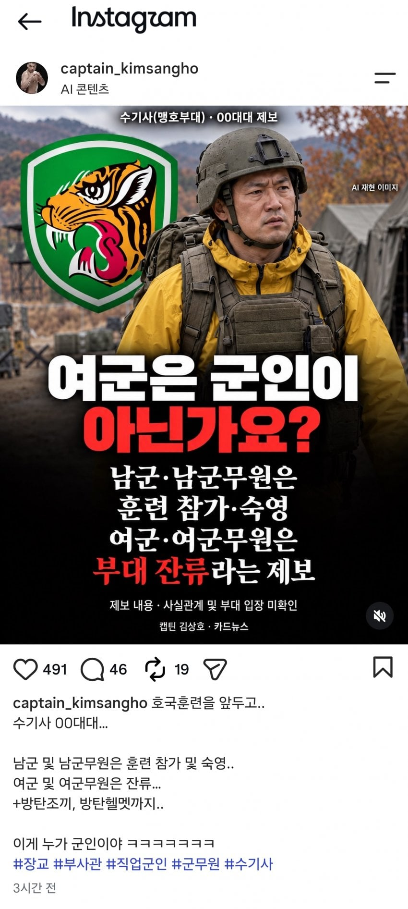
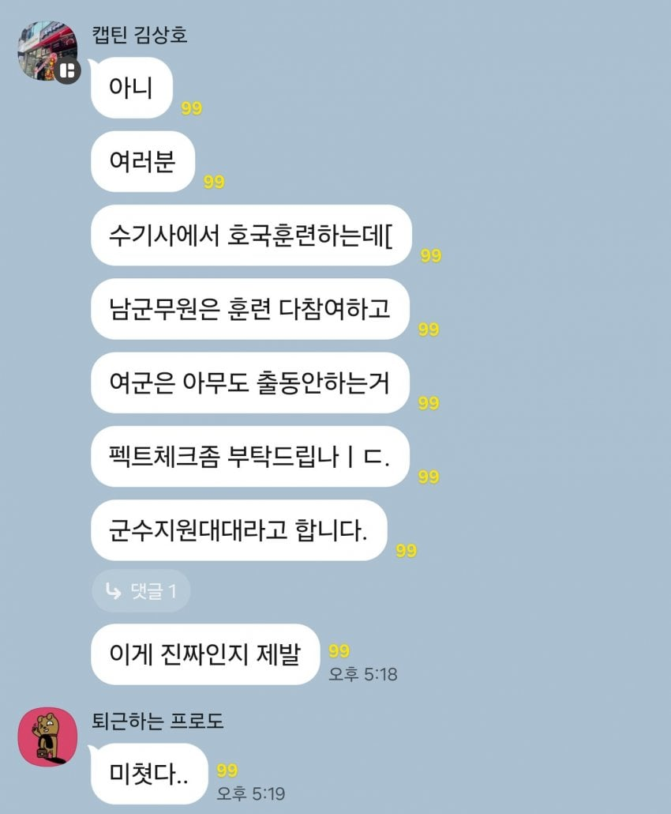
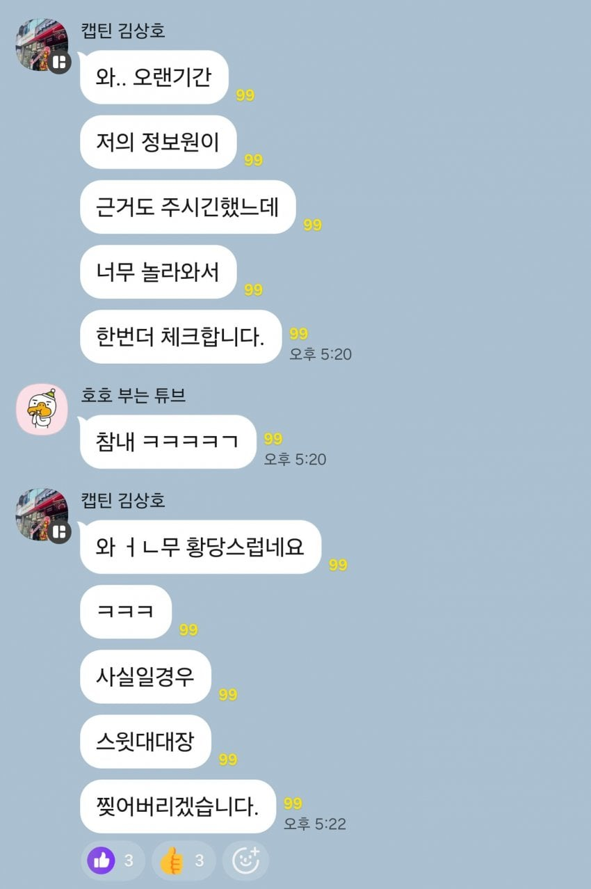

옛날엔 여자들 커피라도탔지 지금은 하는게머냐
다 스윗스윗해서 그냥 넘어가더라
지적하면 폐급만들고 ㅋㅋㅋ
스윗한 늙은이들 다 뒤져야 바뀌지
군무원을 왜 훈련에 참가시켜?
훈련 나가도 문제 안나가도 문제 ㅋㅋㅋ 존재 자체가 문제
애초에 여군 자체가 쓸모가 없음 사람 늘어서 일이 줄어드는게 아니라 그사람이 할일이 나머지사람들한테 다 감 ㅋㅋㅋ
이상한 나라
여군 자체는 문제가 아니지
근데 여'군'이 아니라
'여'군으로 대하는 스윗한 인간들때문이지
훈련도 제대로 같이 해야되는데
그걸 제대로 못하게 하니까 훈련할때는 없는게 낫다 이소리 나오고
막상 밖에서는 저럴거면 왜 있음? 소리가 나오잖아
군무원도 훈련에 참가하는건 맞긴 맞는데
현역 군무원 업무분장이 안되는 곳이 여럿 있다더라
근데 군인을 여자라는 이유로 부대 잔류 시키는 것도 웃기고
남자 군무원을 방탄에 헬멧까지 씌우고 훈련 참가시키면서
여성 군무원을 잔류 시키는 것도 이상하지 않나?
군무원이 부대 상황근무나 사관근무에 들어간지는 오래됐고, 사람이 줄어서 부대들이 점차 통합되고 있긴 할껀데
사람 없는 모 부대는 5번 이상도 있다고 하고
통합전 사람 모자랄땐 3-4회 서기도 하고
그럴다는 말은 월 3-4회라 함은 근무가 땡겨지고 밀리면 만 한달동안 5번도 가능하다는 소리잖아?
군무원 훈련참가는 케이스 바이 케이스인데 안시키는게 맞지 않음?
여군무원으로 잘못봤네 ㅋㅋㅋㅋㅋ
씨발 여군 ㅋㅋㅋㅋㅋㅋㅋㅋ
그러네 여군무원이 아니고 여군이네 ㅋㅋㅋㅋㅋㅋㅋㅋ
손들어서 간 여자애들도 저따위인데 아무나 쳐 끌고가자고? 김주애한테 자동문 열어주자는 소리임.
대한민국이 지금 필요한건 여성징병 이전에 여자도 전투원을 할 수 있다는 정신무장임. 대학 입시에 체력장 부활시키고 여자애들도 학교에서 제식훈련 받아야 함.
그런거 없이 그냥 막지르면 나라 한순간에 망함. 좆빠지게 일해가지고 세금내서 국군이 흑표 전차랑 F-35를 갖추면 뭐하냐 오합지졸 손에 들어가면 김주애 수집품에 불과한 것을.
13군번인데 우리도 호국할때 일반 사병 간부들은 제대로 씻지도못하고 꾀죄죄하게 다니는데 여군들은 매일같이 차타고 나가서 씻고들어옴 시발련들
여군은 진짜 군인이라 쳐주기도 부끄럽네
저렇게 훈련 다 할거면 부사관했지...
ㅅㅂ 내가 나온 수기사가 이렇게 ㅂㅅ이 되다니... 군수지원대대면 신교대 옆에 있는 거기인가
정신 똑바로 차려라 !
천룡인 ㅋㅋ
여군을 저리 취급하는 이유는 지휘관들 입장에선 여자는 하등 쓸모 없는 인력으로 취급하기 때문임
그러면서 사회적으로 여성 평등이니 그런 소리하니까 스윗하게 보여야하겠고 겉으로는 좋은 말만함 ㅋ
여자 인력이 많았다면 달랐을거임 남자들만큼은 아니라도 일정 수준이상 써먹을수 있음
여자많은 상급 부대가보면 취급이 많이 다르다는걸 알수있지
여자는 일단 집단이 구성되어야지 써먹을 수 있는 인력임 소수의 여자는 아무짝에 쓸모가없음
남자는 한명이라도 삽쥐어주고 좋은소리하면서 포상이라도 쥐어주면 어떻게든 하는데
여자는 그딴거 관심없음 왜냐면 소수일수록 지휘관이 관대하거든 어떻게 부려먹지 못한다는걸 누구보다도 잘 암
전쟁나면 여군들 90%는 탈영하는거 아니냐ㅋㅋ
실제 전쟁난 나라들 사례만 봐도....
ㅅㅂ 군무원이 왜 숙영까지 해야되냐고 ㅋㅋㅋㅋ 여자든 남자던 군인 이니라 공무원이라고
겁나 스윗해서 턱뼈까지 녹겠네
백번양보해서여군무원잔류는 이해해도 여군도잔류? 미친새끼네진짜ㅋㅋ
여군 나가면 텐트도 쳐줘야 되고
밥도 해줘야 되서 전력 손실이 더 생기는거 아님?
호국훈련 벌써 세바퀴 돌았구나
한국에서는 여성은 신체적조건 때문에 병역을 지지않는다 라고 법에 명시되어있잖음
그럼 신체적인 조건을 장애로 분류한다는거고
장애인채용같은 복지혜택인거지
지금 대하는 태도도 딱 그렇고
그냥 법리적 해석 자체가
여성자체를 정상적인 성인으로 보고있지 않음
여성을 장애로 분류하면 그동안 이해안되던 모든게 기가막히게 맞음
가끔 빡치면 여군은 남군 사기 진작용으로 쓰고 버려야하는거 아니냔 막말이 하고 싶어져요
여군은 무쓸모야 대전차화기하나 제대로 들지도못하는데
아무튼 아니라던 인간들 많았는데 ㅋㅋㅋ
군경소방은 성별제한 들어가야지
군무원 할거면 무조건 공군 가야됨 ㄹㅇ로
공군들 워라밸 즐기며 살 때 육군은 행군함ㅋㅋ
여군은 훈련 같이 나가면 그냥 쓰레기임
군무원이 훈련가고 군인이 훈련안가는게 당연한 세상 ㅋㅋ